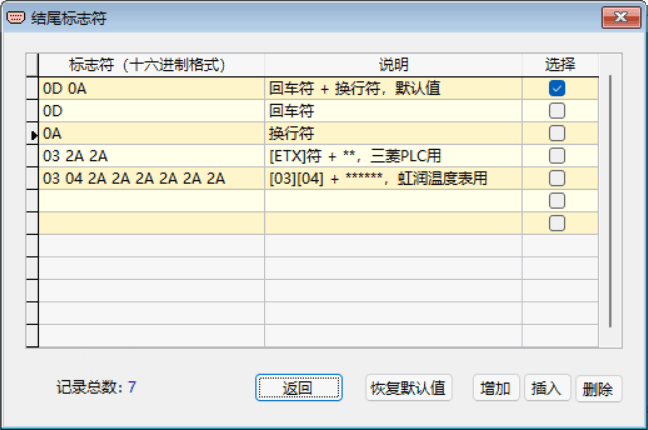

结尾标志符的使用
在主界面中点击【结尾标志符】，将弹出下面的“结尾标志符”窗口。
结尾标志符：一般在智能仪表或 PLC 的通讯命令格式中，均用一个固定的标志字符串，如“回车符＋换行符”等作为其指令的结束标志，这个标志字符串称为“结尾标志符”。RS232 Tool 可用此标志符作为接收数据的自动换行标记，RS232 Tool 默认的结尾标志符是“回车符＋换行符”。
窗口中表格的每一行显示已保存的一种结尾标志符记录，可以直接进行修改、输入或粘贴等操作，在表格中点击鼠标右键可弹出快捷菜单操作。
由于结尾标志符一般都是由特殊 ASCII 码字符所组成，不便于直接显示，因而标字符在此采用十六进制进行编辑、显示。
有些智能仪表通讯命令的结尾标志符不是完全固定的，其中包含有变化的部分，其结构为“固定部分＋变化部分”。在设置时，我们可以用“*”号来代替变化的部分，变化的部分有多少个字符，对应的“*”号就应设有相同的个数。例如：“ABC**”，其固定3位，变化2位。
注意：结尾标志符格式中十六进制内容不能为空。
设置通讯指令结尾标志符的一般步骤
1. 在表格“选择”栏中勾选相应的标志符，若没有所需则应先【增加】或【插入】新的结尾标志符；
2. 若与需设置的不同，则可进行修改；
3. 返回主界面。
